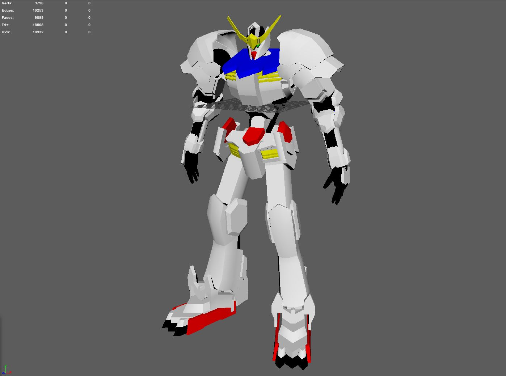
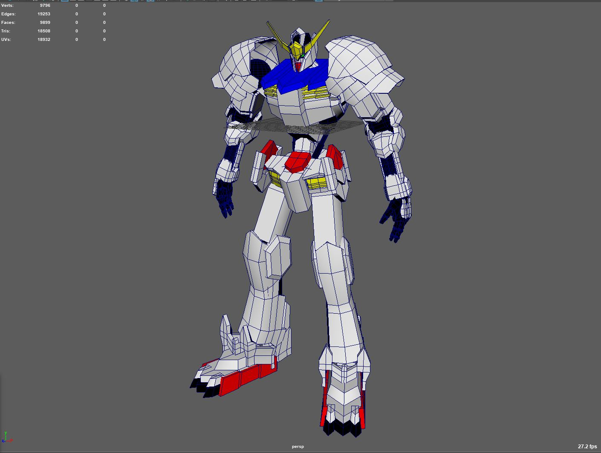
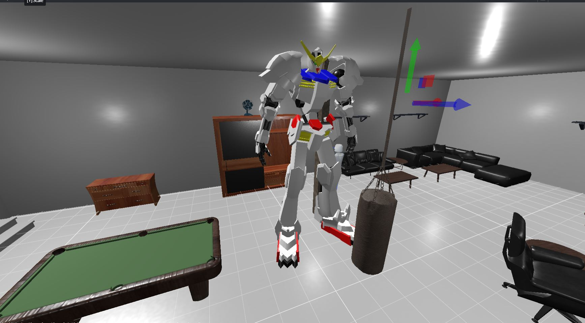
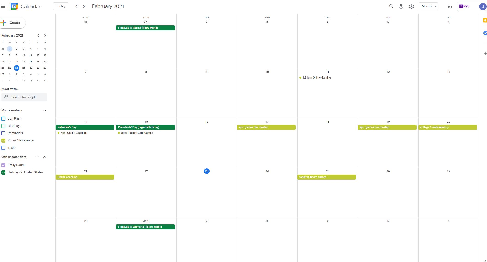

Week 3 3D modeling
3D Modeling
For my 3D model this week, I decided to try and see how fast and how much I could do in 2 hours, so I grabbed a quick image from google of a cool gundam since I've been in the mood for mechas and went to town in Maya.  The model is pretty rough and kinda is just in the block out phase but I think it was good practice to try and train my self with prioritizing things like proportion, gesture, and form.  I didn't have much time cause of my ever crazier schedual so it's not perfectly optimized and I just did some quick auto UVs and baked the color down from the material in Substance before pushing it up to Mozilla hubs. Dream Journal
For this week the first dream I had was last Wednesday. It wasn’t anything too crazy but I was dreaming that I was at the gym and I was short on time for some reason. For my workout, I needed to use the power racks but all three were being used by some old people who were doing things that were dumb or with incorrect form. I felt very inconvenienced by this, then I woke up. On Thursday I had another short dream, I was at my computer on a Zoom call, I couldn’t hear what people were saying because of some sort of loud sound. I then proceeded to wake up from the loud snowplow outside my apartment building. Saturday I had a dream that I was clearing snow off of my car. When I went to turn it on, it started vibrating really badly just like the time when I had a bunch of my wires eaten by rats or squirrels and I had to get it towed and fixed for $700. Luckily it was just a dream and my car was working normally.Reading: Body, Avatar, and Me
The reading this week made me reflect on what kind of avatars I usually make and why. I found that I usually make something that looks like myself, maybe with something cool or funny. I usually just be myself as well so I guess I can’t say I’ve ever experienced the proteus effect. I think that it’s really good for people to have freedom and fun to be whoever they like but I also think that people shouldn’t do it because they are ashamed of who they really are and have some pride in their real-life selves. I wonder if pride or love of oneself is one of the main driving factors when designing a similar avatar. When it came to describing the experience a lot of users had with social interactions I felt like most of them reflected real life but probably worse. People will act online the way they act in real life but with anonymity, there’s a higher chance of people acting less filtered. The demographic I assume for most users is more likely to be the antisocial techie males so it makes sense that the females get more attention in my opinion. I find that most of the people of this category are normally friendly but there will always be those who are racist or anti LGBTQ and they act the way they do in real life or worse. Personally, I’ve been playing online games since middle school, these days I’ve found myself jaded and will keep everyone muted except my real-life friends. But maybe someday people will globally be less bad but for now, the admins monitoring things have to keep them in check. It makes a lot of sense for developers to make a nice variety of body types and everything, it gives users the ability to really personalize and embody their avatars. When people complain that games don’t give enough options, I think they don’t quite realize how expensive or time-consuming it is for developers to create so many options, age, race, gender, and all the clothes along with it. Sometimes the solution is to just make everyone a genderless standardized-sized robot. With most people acting unlike themselves or using avatars so different as well, it makes me wonder with all this anonymity, what do you gain from this versus going on an online forum with people of specific interest.Social Calendar
https://calendar.google.com/calendar/u/0?cid=Y19zaTByZzljczU2YjNrZzV0N3M3NGYydWc5Z0Bncm91cC5jYWxlbmRhci5nb29nbGUuY29t  Played Magic the Gathering using webcams on Discord. Magic is a pretty fun card game me and my friends played a lot growing up and we used to get together at our local game store to play together or participate in tournaments. There are a lot of challenges doing this since network connection can cause issues and webcam clarity can make it very difficult to know what other players have on their board. It almost becomes a mental image in our minds when we play because of these challenges but maybe it's making us better at the game. There can be a lot of cards that are more difficult to play like ones where you would normally take an opponent's card or look at their deck so we end up not putting those types of mechanics in our decks. Although there are a lot of challenges, there are some upsides. We don't have to worry about physically gathering together so it can make some of us with crazier schedules more available to play. I was also able to get some of my local friends to meet and play with some of my college friends who are all over the place in other states which has been cool and would have never happened without the current situation. I've been coaching some of my friends on a weight loss journey, helping them out with exercises, macro tracking, and general words of advice and answers to questions. We use Discord to communicate and have group chats where we can share advice and build our personal community. My best friend for about 20 years, we get together to shoot baddies in Call of Duty online, using Discord to communicate. The game isn't that good or anything but it gives us something to do as we catch up and keep in touch. I started a part-time gig with NYU where I make some cool UE4 development stuff similar to using a social VR platform.home
while (!deck.isInOrder()) {
print 'Iteration ' + i;
deck.shuffle();
i++;
}
print 'It took ' + i + ' iterations to sort the deck.';